Module 4.
데이터 시각화 · AI 업무도구 만들기
이 시간에 할 일
M4
설문조사 결과를 넣으면 핵심 인사이트 · 차트 · 경영층 보고서가 나오는 화면을 만듭니다.
보고서는 PPT로 내려받고, 화면은 동료가 더블클릭으로 여는 프로그램으로 바꿉니다.
| 구분 | 내용 |
|---|---|
| 열쇠 | Claude API — 내가 만든 프로그램 안에서 AI를 부르는 열쇠 |
| 검증 | 큰 걸 만들기 전에 작은 걸로 먼저 되는지 확인 |
| 설계 | 기획서 · 스펙 · 단계 — 만들기 전에 말로 적는 문서 세 개 |
| 제작 | Phase 1~4 — 한 단계씩 만들고 사람이 확인 |
| 배포 | 동료에게 파일 하나로 전달하기 · 사내 배포 가이드 |
[우수 사례] 팀원 평가 · 자동 피드백 대시보드
M4-1 · 시연현대자동차 전자편의제어시험1팀 — 흩어진 기록을 모아 근거가 붙은 피드백 초안까지

① 흩어진 기록을 모아 자가 평가와 대조
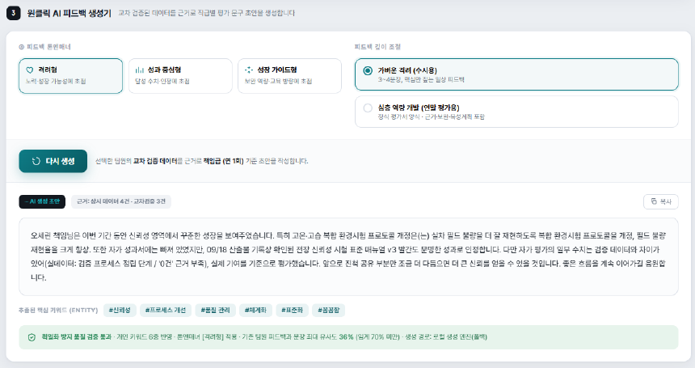
② 근거를 달아 피드백 초안까지 자동 생성
[우수 사례] 실시간 일정 관리 AI Agent
M4-1 · 사례현대모비스 조향시스템설계2팀 — 메일 · 메신저 · 회의 초청이 하루 종일 섞여 들어온다
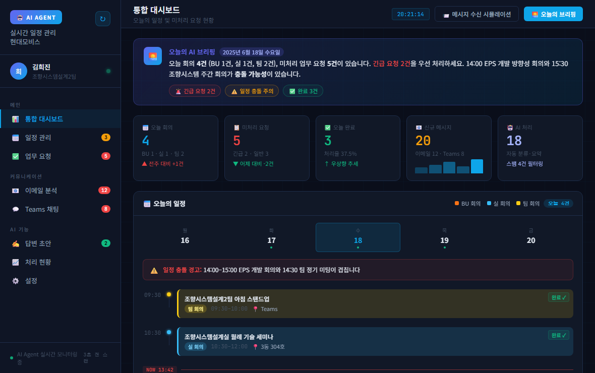
① 긴급 · 일반 · 참고로 자동 분류, 일정 충돌은 미리 경고
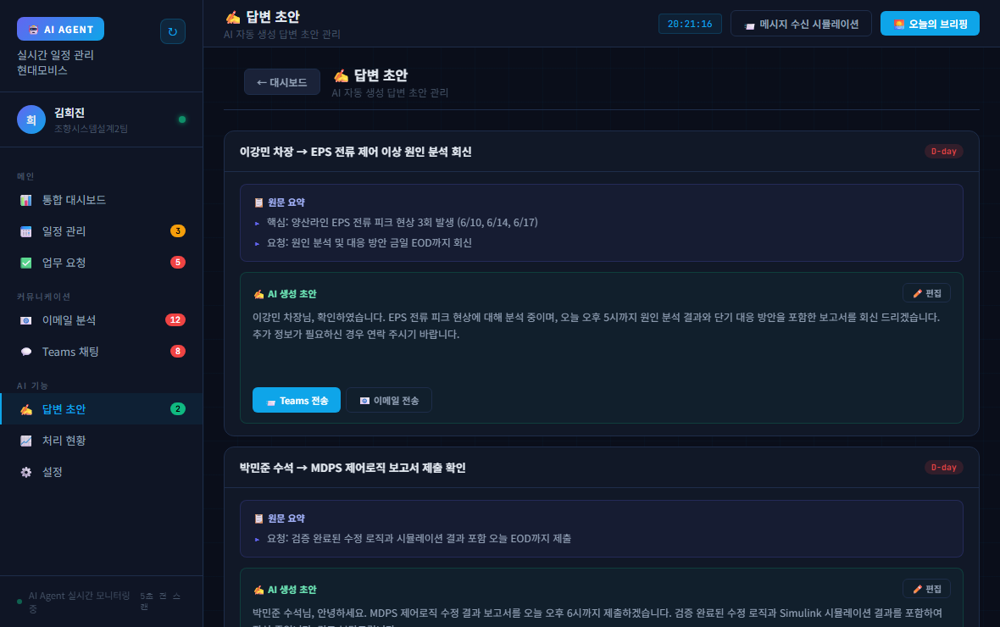
② 답변 초안까지 준비 — 보낼지는 본인이 결정
[우수 사례] 지시사항 이행관리 시스템
M4-1 · 사례현대자동차 미래전략운영팀 — 회의록은 쌓이는데 누가 언제까지 하는지는 흩어진다
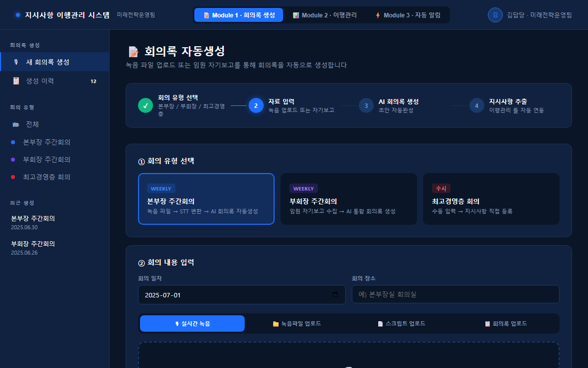
① 회의 녹음을 받아써서 회의록 초안 → 지시사항 추출
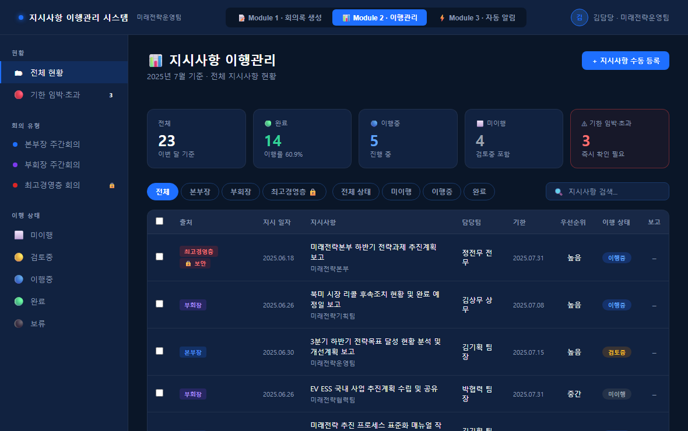
② 담당 · 기한 · 이행 상태가 표로 남고, 기한 전에 자동 안내
[우수 사례] 신시장 인텔리전스 대시보드
M4-1 · 사례현대자동차 미래혁신2팀 — 신시장 조사는 흩어진 자료를 사람이 읽고 정리해야 했다
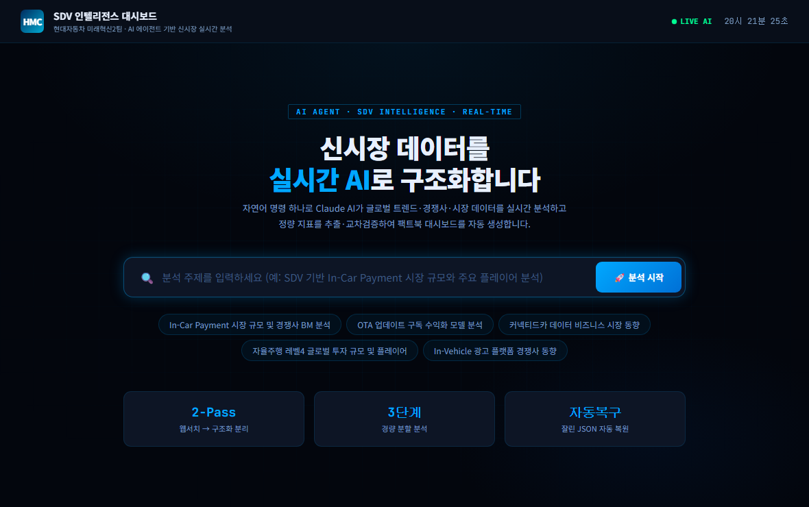
궁금한 것을 한 줄로 적으면 — 찾는 일은 웹 검색에, 정리는 AI에
오늘 만들 것 — 설문 결과에서 경영층 보고서까지
M4-1 · 시연
모아 놓고 열어 보지 못한 설문조사 결과를 넣으면,
AI가 읽고 보고서 초안까지 만들어 주는 화면을 만듭니다.
① 설문 결과 올리기
받은 CSV 파일 그대로
② AI가 인사이트 분석
무엇이 문제이고 어디가 심각한지
③ 대시보드로 확인
숫자와 차트로 한눈에
④ 보고서 PPT 받기
경영층 보고 초안을 파일로
생산팀
라인 작업자 만족도 설문
어느 공정에 불만이 몰리는지
설비팀
설비 가동 · 고장 관련 설문
어떤 설비가 반복해서 걸리는지
고객VOC팀
고객 만족도 설문
어떤 불만이 늘고 있는지
매번 엑셀을 여는 일을, 한 화면으로
M4-1 · 개념같은 자료를 매주 같은 방식으로 보고 있다면, 그건 화면 하나로 만들 수 있습니다.
지금
파일 열기 → 필터 → 정렬 → 차트 → 부분 캡처 → 문서에 붙여넣기
매번 처음부터. 사람마다 잘라 온 그림이 다릅니다.
화면 하나를 만든 뒤
열면 이미 그 화면. 새 자료만 올리면 끝
누가 봐도 같은 그림이라, 회의에서 바로 같은 이야기를 합니다.
AI가 없는 화면, AI가 들어간 화면
M4-1 · 개념AI가 없으면
테트리스 게임
이력서 PDF를 텍스트 파일로 바꿔 주기
정해진 모양의 표를 차트로 그려 주기
정해진 입력만 처리합니다. 형식이 조금만 달라도 멈춥니다.
AI가 들어가면
AI와 대결하는 테트리스 게임
이력서를 읽어 보고 등급까지 매기기
처음 보는 표를 이해하고 어울리는 차트 고르기
내용을 이해합니다. 처음 보는 자료도 다룹니다.
대시보드는 이런 화면입니다
M4-1 · 개념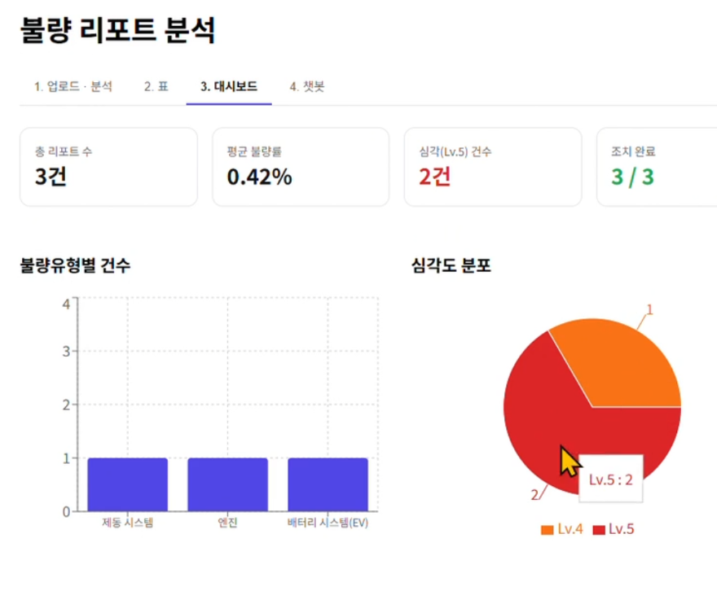
같은 방식으로 만든
다른 대시보드입니다.
- 위쪽 — 숫자 카드가장 먼저 봐야 하는 지표
- 아래쪽 — 차트흐름과 비중을 눈으로
- 위 탭 — 업로드 · 표 · 대시보드 · 보고서보고 싶은 깊이를 골라서 본다
Claude Code와 Claude API는 다릅니다
M4-4 · 개념
지금까지는 내가 AI에게 시켰습니다.
이제는 내가 만든 프로그램이 AI에게 시켜야 합니다.
Claude Code
내 컴퓨터에서 대신 일해 주는 AI 일꾼
사람이 시키면 파일을 만들고 고친다 — M3에서 계속 써 온 것
Claude API
프로그램 안에서 AI를 부르는 열쇠
사람이 없어도, 프로그램이 스스로 AI에게 물어보고 답을 받는다
[실습] 내 API 키를 발급받습니다
M4-4 · 실습- 안내받은 페이지에서 개인 API 키 발급 화면으로 들어갑니다
- OTP 인증 화면이 뜨면 인증 앱을 설치하고 인증코드를 넣습니다사내 노트북 보안 정책 — 가이드 페이지를 함께 봅니다
- 발급된 키를 메모장에 복사해 둡니다
키는 아이디 · 비밀번호와 같습니다. 화면 공유 · 메신저 · 게시판에 올리지 않습니다.
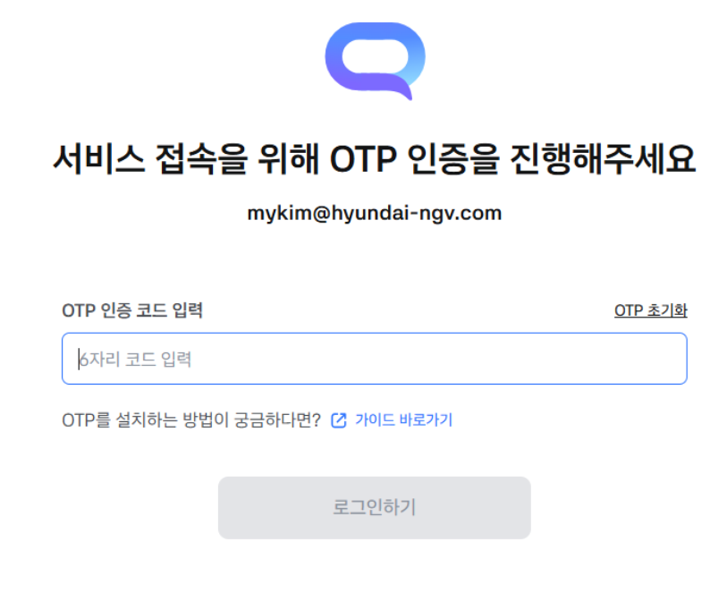
OTP 인증 화면
큰 걸 만들기 전에, 작은 걸로 먼저 확인합니다
M4-4 · 개념
처음 쓰는 기술은 되는지부터 확인합니다.
작게 만들어 확인해 보는 것을 기술검증이라고 합니다.
① HTML 파일 한 장
더블클릭하면 브라우저에 화면이 뜨는지
② API로 AI와 대화하기
내 키를 넣으면 답이 돌아오는지
③ 그다음이 본 작업
둘 다 되면 더 큰 프로젝트로 넘어간다
이 둘이 안 되면 뒤의 작업은 전부 헛수고가 됩니다. 그래서 먼저 합니다.
[실습] 작업 폴더를 만들고 Claude를 켭니다
M4-2 · 실습- 탐색기에서 C:\work 안에 dashboard 폴더를 만듭니다오늘 만드는 것이 전부 이 폴더 안에 쌓입니다
- 그 폴더를 열고, 주소창에 code . 을 입력합니다점 하나까지 그대로 — “지금 이 폴더를 VS Code로 열어라”라는 뜻입니다
- VS Code가 열리면 터미널에서 claude 를 실행합니다터미널은 상단 메뉴 Terminal > New Terminal
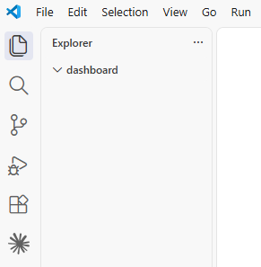
② 이 폴더로 열립니다
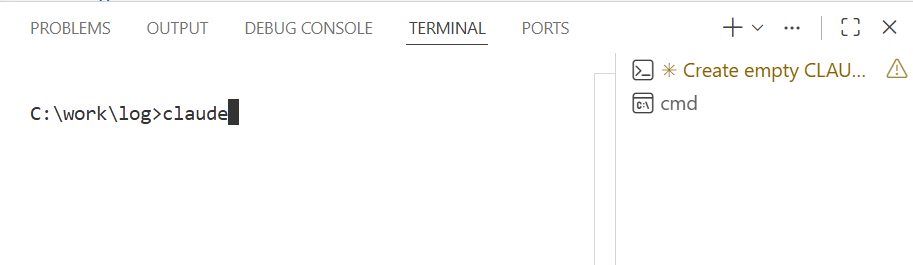
③ VS Code 터미널에서 claude
[실습] 사내망에서 먼저 맞춰 둘 두 가지
M4-4 · 실습
만들기 전에 준비물부터 확인합니다. 둘 다 Claude에게 시키면 됩니다.
건너뛰면 뒤에서 설치할 때 조용히 실패합니다.
① 파이썬 확인하고, 없으면 설치
파이썬이 설치되어 있는지 확인해줘
설치되어 있지 않으면 설치해줘
끝나면 버전을 알려줘
② 사내망에서 설치가 막히지 않게
사내망이라 설치가 막힐 수 있어
npm config set strict-ssl false 를 실행하고
설정이 잘 들어갔는지 확인해줘
① 파이썬은 왜
AI가 표 자료를 다루거나 파일을 만들 때 자주 꺼내 쓰는 도구입니다. 컴퓨터에 없으면 그 자리에서 “못 하겠다”가 됩니다.
② strict-ssl 은 왜 끄나
사내 보안장비가 인터넷에서 오는 상자를 열어 확인하고 다시 포장해 전달합니다.
그러면 “봉인이 처음과 다르다”며 받기를 거부합니다.
이 설정은 사내에서는 봉인 검사를 하지 마라고 알려 주는 것입니다.
[실습] HTML 한 장으로 API 연결을 확인합니다
M4-4 · 실습Claude Code에 그대로 붙여넣기
Claude API가 잘 동작되는지 테스트를 해보고자 해
화면은 HTML 파일 하나로만 만들어줘
화면에서 Claude API KEY를 입력 받고
버튼을 누르면 잘 동작되는지 테스트 되고
에러가 나면, 디버깅 가능하게끔 자세한 에러메시지가 보여짐
연결이 된 후에는 간단한 채팅 화면이 뜨는데
내가 프롬프트를 작성하면 답변이 화면에 보이도록 개발해줘
만약 채팅에 아무런 메세지가 안뜬다면 디버깅 할 수 있게
자세한 오류메세지로 대답을 대신해줘
주의사항 : 엔트로픽 SDK나 라이브러리를 설치하지 마
모델은 sonnet으로만 해야해
만들어진 html 파일을 더블클릭하면 브라우저에 화면이 뜹니다.
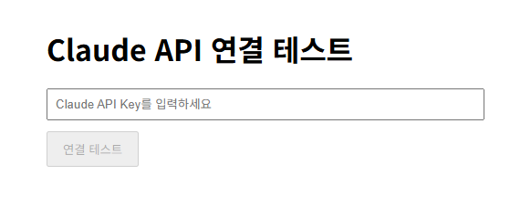
이런 화면이 뜹니다
아직은 안 됩니다
화면은 뜨지만 키를 넣어도 동작하지 않습니다. 다음 장에서 고칩니다.
[필수] 사내에서는 그냥 부르면 막힙니다
M4-4 · 개념
Claude가 만든 코드는 사외 인터넷으로 직접 접속하게 되어 있어,
사내 노트북에서는 키가 맞아도 오류가 납니다.
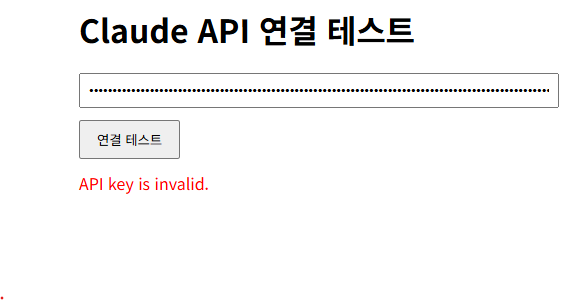
HTML이 사내 서버를 직접 부르면
브라우저가 Origin 헤더를 자동으로 붙여 보냅니다
사내 서버는 그 헤더를 보고 403으로 막습니다
이 헤더는 화면 쪽 코드로 지울 수 없습니다.
사이에 작은 중계 프로그램을 두면
HTML은 내 컴퓨터의 중계 프로그램에게 부탁하고
중계 프로그램이 헤더를 정리해 사내 서버로 보냅니다
브라우저의 제약을 받지 않으니 통과합니다.
[실습] 중계 프로그램을 만들고 연결합니다
M4-4 · 실습Claude Code에 그대로 붙여넣기
방금 만든 HTML이 사내에서 동작하도록 고쳐줘
브라우저에서 사내 서버를 직접 부르면 막히니까, 같은 폴더에
claude-proxy.js 라는 작은 중계 서버를 만들고 HTML은 거기로만 요청하게 해줘
중계 서버는 아래를 지켜야 해
1. 모델 이름은 claude-sonnet-5 로 쓴다 (날짜가 붙은 이름은 사내 서버가 500 에러를 낸다)
2. 사내 프록시로 보낸다 https://h-chat-api.autoever.com/claude-code/v2/v1/messages
3. 인증 헤더는 Authorization: Bearer 를 쓴다 (사외의 x-api-key 가 아니다)
4. Origin 과 Referer 헤더는 지우고 보낸다
5. SSL 인증서 검증은 끈다
6. Content-Type 은 application/json; charset=utf-8 로 적는다
예시 코드는 https://pro.mincoding.co.kr/public/upload/py2x9ajcg5.js 와 같아
다 만들면 node.js로 중계 서버를 실행하고, 브라우저에서 열 주소를 알려줘
기술검증 끝 — 백업하고 자리를 비웁니다
M4-4 · 실습- 채팅이 오가는지 확인합니다안 되면 “1~7번까지 모두 적용한 것 맞는지 확인해. 더블체크해서 빠진 부분이 있다면 다시 적용해줘”
- 동작이 확인된 이 폴더를 통째로 복사해 base 로 남겨 둡니다HTML과 중계 서버가 한 벌입니다. 다음에 다른 도구를 만들 때 여기서부터 시작하면 됩니다
- /clear 로 지금까지의 대화만 비웁니다파일은 그대로 둡니다. 이 HTML과 중계 서버 위에 대시보드를 얹어 갑니다
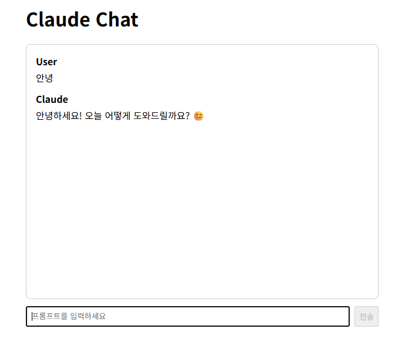
① 채팅이 되면 검증 완료
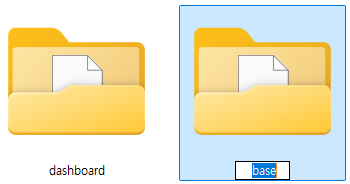
② 백업 폴더 base
CLAUDE.md에 개발 방식을 못 박습니다
M4-2 · 실습
방금 검증한 HTML 한 장 + 중계 서버, 이 구조 그대로 대시보드를 만듭니다.
그러지 않으면 Claude는 멋대로 새 프로젝트를 만들어 버립니다.
Claude Code에 그대로 붙여넣기
CLAUDE.md 만들고 이 프로젝트의 개발 방식을 명시해줘
지금 이 폴더에 있는 HTML 파일 한 장과 claude-proxy.js 중계 서버, 이 둘로만 개발한다
React, Vite, TypeScript 같은 프레임워크는 쓰지 않는다
다만 PPT 파일 만들기처럼 꼭 필요한 라이브러리는 써도 된다
새 프로젝트를 만들지 말고, 지금 있는 파일을 이어서 고친다
Claude API는 항상 claude-proxy.js 를 거쳐서 부른다
CLAUDE.md에 목적을 적습니다
M4-2 · 실습
앞에서는 어떻게 만들지를 적었습니다. 이번에는 무엇을 만들지를 적습니다.
마지막에 무엇이 되어야 하는지까지 처음부터 알려 줍니다.
Claude Code에 그대로 붙여넣기
CLAUDE.md에 이 프로젝트의 목적을 적어줘
VOC팀에서 받은 설문조사 결과 CSV 파일을 불러와서
AI가 응답을 분석해 핵심 인사이트를 뽑아 주고
대시보드로 한눈에 보여주는 앱이야
그리고 경영층 보고서 초안을 자동으로 만들어 PPT 파일로 내려받을 수 있어야 해
마지막에는 electron 으로 실행파일(exe)을 만들어 동료에게 그대로 나눠 줄 거야
나에게 맞는 규칙을 하나 더합니다
M4-2 · 실습둘 중 하나만 골라 넣습니다.
선택 1 — 빠르게 진행하고 싶다면
CLAUDE.md에 Rule을 하나 추가할게
나는 비 개발자이므로,
내가 모호하게 시켜도 내 의도를 파악해서
질문하지 말고 알아서 파악해줘
선택 2 — 하나씩 확인하며 가고 싶다면
CLAUDE.md에 Rule을 하나 추가할게
내가 시킨것에 대해 모호한 경우
스스로 해석하지 말아주고,
모호한 질문은 내게 다시 물어봐줘
[실습] CLAUDE.md를 완성합니다
M4-2 · 실습- 앞 세 장의 문장을 순서대로 넣습니다받아 적지 말고 [복사] 버튼으로 가져다 쓰세요
- CLAUDE.md를 열어 개발 방식 · 목적 · 규칙이 다 들어갔는지 눈으로 확인합니다
- 자기 업무에 맞는 내용을 넣을 수 있는 분은 우리 팀 설문으로 바꿔 적어 보세요
왜 눈으로 확인하나
AI는 매번 조금씩 다르게 적습니다. 내가 말한 것이 실제로 들어갔는지는 열어 봐야 압니다.
길게 쓰지 않습니다
CLAUDE.md는 모든 지시 앞에 붙습니다. 너무 많이 적으면 오히려 지시를 흐립니다 — M3에서 본 그대로입니다.
여기서부터가 진짜 — 문서 세 개로 방향을 잡습니다
M4-2 · 개념
바로 만들라고 하면 AI는 자기 마음대로 만듭니다.
만들기 전에 무엇을 · 어떻게 · 어떤 순서로 를 먼저 적습니다.
PROPOSAL.md
무엇을 원하는가
사용자 입장의 요구사항
SPEC.md
어떻게 동작하는가
집계 기준 · 화면 구성
PHASES.md
어떤 순서로 만드는가
단계별 계획
기획서 — 사용자 입장에서 적는 문서
M4-2 · 개념
기획서에는 개발 이야기를 넣지 않습니다.
“이런 게 있으면 좋겠다”만 적습니다.
빈 파일부터 만들기
docs/PROPOSAL.md 를 빈 파일로 만들어줘
여기에는 개발자가 아닌 사용자 입장에서 프로그램의 요구사항을 기입할꺼야.
그리고 CLAUDE.md 에 이 파일에 대해 명시해줘
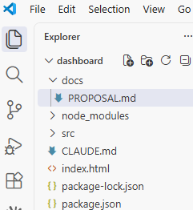
docs 폴더에 생깁니다
왜 CLAUDE.md에 적나
경로를 적어 둬야 Claude가 필요할 때 이 문서를 찾아 읽습니다.
원하는 것을 다섯 줄로 적습니다
M4-2 · 실습그대로 붙여넣기 — 아래 다섯 줄이 오늘의 요구사항입니다
docs/PROPOSAL.md 에 다음 요구사항을 적어줘
1. 먼저 Claude API 키 테스트를 하고, 성공하면 본 화면이 나온다.
2. 설문조사 결과 CSV 파일을 불러와, 문항과 응답을 정리해 표로 보여준다.
3. Claude API로 응답을 분석해 핵심 인사이트를 뽑는다. 무엇이 문제이고 어디가 심각한지, 무엇부터 손대야 하는지.
4. Dashboard 탭을 누르면 인사이트에 어울리는 차트와 수치가 보여진다.
5. 보고서 탭에서 경영층 보고 초안이 자동으로 만들어지고, PPT 파일로 내려받을 수 있다.
[실습] 기획서를 직접 써 봅니다
M4-2 · 실습기획서에는 사람이 보는 것만 적습니다.
- 교안을 참고해 docs/PROPOSAL.md 를 직접 만들어 봅니다
- 한 줄씩 “무엇을 누르면 무엇이 보인다” 로 적습니다“~을 개발한다”가 아니라 “~가 보인다 · ~를 누르면 ~가 된다”
- 화면을 여는 순간부터 끝낼 때까지, 쓰는 사람이 겪는 순서대로 늘어놓습니다
- 자기 업무로 바꿀 수 있는 분은 우리 팀이 매번 반복해서 보는 자료로 바꿔 적어 보세요
왜 쓰는가
안 적으면 AI가 자기 마음대로 만듭니다. 다 만든 뒤에야 “내가 원한 게 이게 아닌데”를 알게 됩니다.
무엇을 적는가
① 무엇을 넣는가 ② 무엇이 나오는가 ③ 누가 보는가
이 셋을 화면에 보이는 순서대로 한 줄씩.
적지 않는 것
어떤 기술로 만들지는 한 줄도 적지 않습니다. 그건 AI가 정할 몫입니다.
스펙 — ‘정확히 어떻게’를 정하는 문서
M4-2 · 개념
요구사항은 무엇을 원하는가,
스펙은 정확히 어떻게 동작하는가입니다.
- “차트를 보여준다” → 요구사항이대로 두면 AI가 알아서 아무 차트나 그립니다
- “불만 유형 7개로 나눠 막대차트, 부서별 비중은 원형차트” → 스펙여기까지 정해야 원하는 화면이 나옵니다
- 기준이 없으면 잘 만들었는지 판단할 수도 없습니다
제품 스펙 문서 예시 —
이 정도로 구체적으로 적습니다
[실습] 설문을 읽혀 스펙 초안을 뽑습니다
M4-2 · 실습- docs/SPEC.md 빈 파일 만들어줘 로 파일을 만들고 CLAUDE.md에도 적게 합니다
- 배포받은 자료의 설문 결과 CSV 3개를 docs 폴더에 끌어다 놓고 survey1~3 으로 이름을 바꿉니다VOC팀 설문 결과를 CSV로 저장해 둔 교육용 가상 데이터입니다
- 아래 문장으로 AI에게 초안을 쓰게 합니다
그대로 붙여넣기
내가 설문조사 결과 CSV 파일을 3개 줄테니까
너가 SPEC.md 문서 초안을 한번 작성해줘
@docs/survey1.csv @docs/survey2.csv @docs/survey3.csv
그리고 내가 직접 작성할 부분도 1개만 표시해줘
왜 AI에게 시키나
문항이 몇 개이고 어떤 값이 들어 있는지, 사람보다 파일을 직접 읽은 쪽이 정확합니다.
그대로 두지 않습니다
AI가 쓴 것은 초안입니다. 다음 장에서 내 기준으로 고칩니다.
[도전] 초안을 내 기준으로 고칩니다
M4-2 · 실습AI가 쓴 초안을 읽어 보고, 내가 아는 기준으로 바꿉니다.
불만 유형을 내가 정한 7개로 바꾸기
응답을 분류할 불만 유형은 설비 안정성, 작업 안전, 근무시간 · 교대,
소통 · 보고체계, 교육 · 숙련도, 작업환경, 고객 응대 7개로 해줘
우리 팀이라면
우리 팀 설문에서 실제로 쓰는 분류가 있다면 그것으로 바꿔 보세요. 그 순간 이 앱은 우리 팀 도구가 됩니다.
분류가 곧 보고서
여기서 정한 7개가 그대로 차트의 축이 되고, 보고서의 목차가 됩니다.
[주의] AI에게 전부 맡기면 안 됩니다
M4-2 · 개념이 한마디를 하는 순간, 결과물은 내 것이 아니게 됩니다.
하지 말 것
나머지 너가 다 알아서 작성해줘
맡기면 이렇게 됩니다
예전에 만들던 방식을 그대로 가져다 씀
필요 없는 기능이 잔뜩 붙음
설명만 길어지고 정작 원하던 것이 없음
사람의 자리
무엇을 만들지 정하는 것 — 사람
그것을 빠르게 만드는 것 — AI
AI는 지휘를 받는 쪽입니다. 지휘까지 맡기지 않습니다.
단계를 나눕니다 — PHASES.md
M4-2 · 개념
건물을 지을 때 기초 → 골조 → 외장 → 설비 → 인테리어 순서가 정해져 있듯,
앱도 만드는 순서를 먼저 정합니다.
Phase 1
화면 구성
가짜 데이터로 완성된 화면만 먼저 본다
Phase 2
설문 불러오기
CSV 파일을 읽어 표로 확인한다
Phase 3
인사이트 · 대시보드
핵심 인사이트와 차트를 완성한다
Phase 4
보고서 · PPT
보고서 초안을 만들어 PPT로 내려받는다
만드는 순서를 문서로 적습니다
M4-2 · 실습그대로 붙여넣기
docs/PHASES.md 파일에 Phase1 ~ 4까지 내용 써줘
Phase1 : UI 구성 — UI 테스트 버튼을 누르면, 가짜데이터를 이용하여 완성된 UI가 바로 보여진다. 기능 동작은 안되고 UI만 살펴볼 목적이다.
Phase2 : 설문 데이터 로더 구현 — 설문 결과 CSV 파일을 불러오고, 문항과 응답을 표로 확인 가능
Phase3 : 인사이트 분석과 Dashboard 완성 — Claude API로 핵심 인사이트를 뽑고, 요약과 차트 출력까지 완료한다.
Phase4 : 경영층 보고서 완성 — 보고서 초안을 자동 생성하고 PPT 파일로 내려받는 기능까지 완료한다.
“한 단계만 하라”는 규칙을 겁니다
M4-2 · 실습규칙이 없으면 AI는 묻지도 않고 끝까지 다 만들어 버립니다.
① 경로를 알려 주기
CLAUDE.md 에다가 PHASES.md 파일을 언급해줘
② 규칙 걸기
CLAUDE.md에 Rule을 하나 더 추가해줘
개발을 할 때면 각 PHASE에 맞는 내용만 개발해야하며, 더 많은 내용을 개발해서는 안돼
예를들어 PHASE1 개발하라고 했는데, PHASE2 내용까지 개발하면 안돼
중간에 확인할 기회가 생기고, 잘못된 방향으로 멀리 가지 않습니다.
한 단계씩 만들고, 사람이 봅니다
M4-2 · 개념이렇게 시키면
Phase 1 ~ 4 까지 전부 개발해줘
중간에 어디서 어긋났는지 알 수 없습니다. 다 만든 뒤에야 “내가 원한 게 이게 아닌데”를 알게 됩니다.
이렇게 시킵니다
Phase 1 개발 → 사람의 검토
Phase 2 개발 → 사람의 검토
Phase 3 개발 → 사람의 검토
Phase 4 개발 → 사람의 검토
느려 보이지만, 결국 이 방법이 가장 빠릅니다.
Phase 1 — 화면부터 만듭니다
M4-2 · 실습그대로 붙여넣기
Phase1 내용을 요약하여 내게 말해주고, 개발을 진행시켜
이후 내가 직접 동작결과를 확인하고 검토해볼꺼야
- 먼저 나오는 요약을 읽고 방향이 맞는지 봅니다
- 개발이 끝나면 UI 테스트 버튼을 눌러 화면을 확인합니다
- 마음에 안 드는 부분은 말로 고칩니다
왜 화면부터인가
기능보다 화면을 먼저 보면, 방향이 어긋났을 때 바로 잡을 수 있습니다.
여기서 멈춥니다
Phase 1만 시켰는데 분석까지 만들어 놨다면, 되돌리라고 말합니다.
[실습] Phase 2 ~ 4를 같은 방법으로
M4-2 · 실습숫자만 바꿔 가며 네 번 반복합니다
Phase2 내용을 요약하여 내게 말해주고, 개발을 진행시켜
이후 내가 직접 동작결과를 확인하고 검토해볼꺼야
Phase 2
CSV를 불러와 표로 확인
Phase 3
인사이트와 대시보드가 잘 나왔는지 확인
Phase 4
보고서 초안과 PPT 다운로드 확인
마음에 안 들면, 말로 고칩니다
M4-3 · 실습
한 번에 완벽하게 만들지 않습니다.
결과 확인 → 수정 요청 → 재확인을 반복합니다.
- 이 화면을 누가 보는지 정합니다팀장이 보는 화면과 임원이 보는 화면은 다릅니다
- “가장 중요한 지표를 크게, 색으로 강조해줘”
- “이 차트는 안 보니까 빼줘”
- “분기별로 볼 수 있는 필터 하나 넣어줘”
- “데이터를 해석한 한 줄 요약을 위에 붙여줘”
왜 하는가
처음 나온 화면은 내 보고 방식과 다릅니다. 그대로 두면 쓰지 않게 됩니다.
무엇이 남는가
고치기 전과 후를 캡처해 두면, 무엇을 어떻게 바꿨는지가 그대로 기록으로 남습니다.
보고 전 습관
보고 전에 말로 다섯 번만 고쳐 보세요. 이 방식이 바이브코딩입니다.
Electron — 웹으로 만든 걸 프로그램으로
M4-5 · 개념
지금 만든 화면은 내 컴퓨터에서 서버를 띄워야 열립니다. 동료에게 그대로 줄 수 없습니다.
Electron은 그 화면을 그냥 실행되는 프로그램으로 바꿔 주는 도구입니다.
- 원리크롬의 핵심 부분과 node.js를 프로그램 안에 같이 넣어 버립니다
- 받는 사람설치도 설정도 없이 더블클릭만 하면 열립니다
- 이미 쓰고 있는 것들VS Code · Discord · Notion 모두 이 방식으로 만들어졌습니다
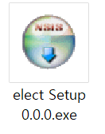
결과물은 이 파일 하나
[실습] 지금 만든 앱을 실행파일로 뽑습니다
M4-5 · 실습연습용을 따로 만들지 않습니다. 지금까지 만든 그 앱을 그대로 프로그램으로 바꿉니다.
Claude Code에 그대로 붙여넣기
Desktop App이 되게끔 electron 으로 배포해
- 이 한 문장이면 됩니다설정도 준비물도 따로 없습니다
- 작업 폴더 안에 release 폴더가 생기고, 그 안에 exe 파일 하나가 만들어집니다
- 더블클릭해서 창으로 뜨는지 확인합니다
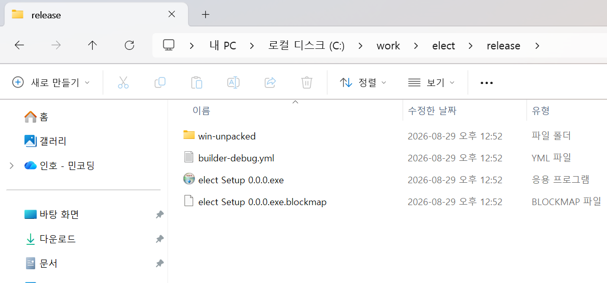
release 폴더 — 이 파일 하나가 전부
[실습] 고치고 다시 뽑아 봅니다
M4-5 · 실습고칠 게 생기면 말로 고치고 다시 뽑습니다. 그게 전부입니다.
예시 — 자기 앱에 맞게 바꿔 넣으세요
보고서 표지에 우리 팀 이름과 오늘 날짜를 넣어줘
이후, electron 으로 다시 배포해
동료가 할 일
받은 파일을 더블클릭. 설치도 설정도 없습니다.
보내기 전에
내 API 키가 파일 안에 남아 있지 않은지 반드시 확인합니다.
현대자동차 사내 배포 가이드
M4-5 · 개념- HTML 파일 하나로 만든 경우메일 · 메신저로 전달. 또는 Confluence 빈 페이지에서 //HMG HTML PRO 를 입력하고 소스 전체를 붙여넣기
- exe 파일로 만든 경우메일 · 메신저로 전달
- DB가 들어간 웹 App인 경우팀원 데이터를 저장하는 운영 수준이면 표준 H Cloud 환경에 배포해야 합니다
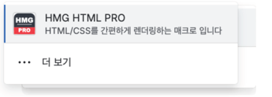
① Confluence 매크로
[실습] 결과물을 정리하고 공유합니다
M4-5 · 실습- 결과 폴더를 한 곳으로 모읍니다실행 파일 · 사용한 데이터 · 사용 안내 txt
- 안내문을 세 줄로 씁니다어떻게 열고 / 무엇을 누르면 / 무엇을 얻는지
- 공유 전에 확인합니다내 API 키가 파일 안에 남아 있지 않은지, 빠진 파일이 없는지
- 교육 플랫폼 질문있어요 게시판에 결과 화면을 올립니다
- 우리 팀에 공유하려면 사내 절차로 어떻게 할지 한 줄 메모합니다
왜 하는가
내 PC에만 있으면 아무도 못 씁니다. 남에게 건네지는 형태로 만들어 둡니다.
가장 중요한 확인
API 키가 파일 안에 남아 있으면 그대로 유출됩니다. 반드시 먼저 확인합니다.
무엇이 남는가
“이번 주 대시보드 같이 봐주세요” 한마디로 팀 전체가 같은 화면을 봅니다.
M4 정리
M4-6 · 정리우리는 코딩하지 않았습니다
M4-6 · 정리
오늘 만든 것은 코드로 만든 것이 아니라,
자연어 지시만으로 만든 것입니다.
입력 데이터
무엇을 넣었나
핵심 지표
무엇을 보나
핵심 사용자
누가 보나
절감 업무
어떤 일이 없어지나
절감 시간
얼마나 줄어드나
“같은 방식으로 우리 팀 화면 3개를 만들겠다.”
감사합니다.
이어서 M5. 나만의 업무 혁신 PoC 설계